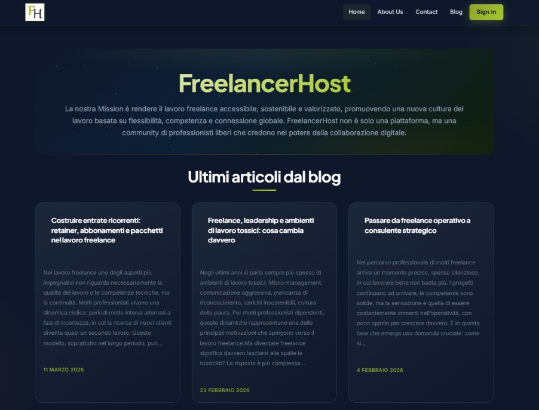
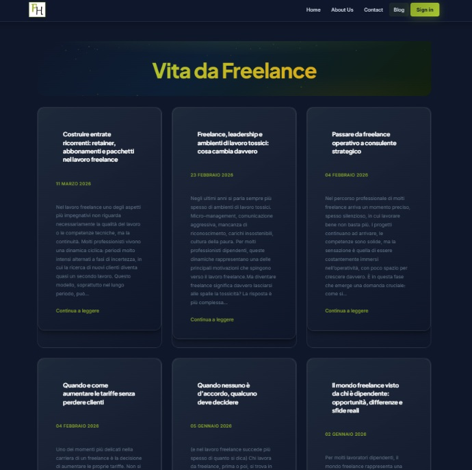
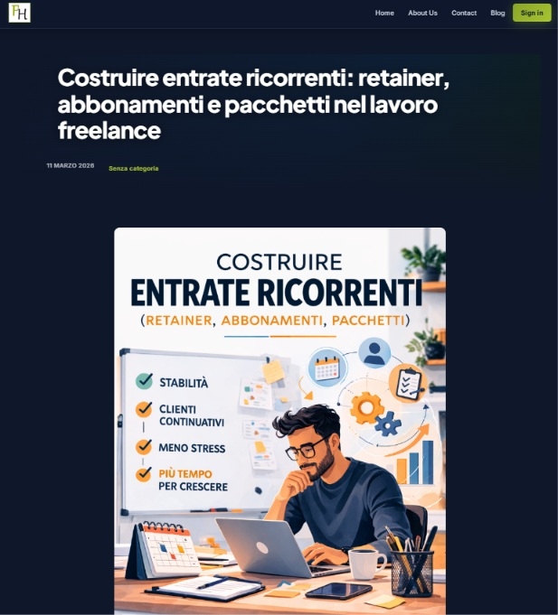

Community Hub & B2B Matchmaking
FreelancerHost
La piattaforma editoriale e gestionale in evoluzione verso un SaaS per il Vendor Management di talenti e fornitori esterni.
La Gestione dei Fornitori
PMI e agenzie digitali si affidano spesso a talenti esterni per scalare. Tuttavia, gestire una rete frammentata di professionisti comporta enormi sfide amministrative e comunicative.
Da Hub a B2B SaaS
Nato come polo editoriale ricco di insight per il mercato freelance, è oggi in transizione verso un vero software di Vendor Management e onboarding automatizzato per aziende.
Ecosistema Ibrido
Un'audience dinamica composta da prosumer digitali (freelance in cerca di risorse) e PMI in rapida crescita che necessitano di soluzioni B2B per l'un-scaling e l'outsourcing.
UI/UX Design
Anteprima Piattaforma


